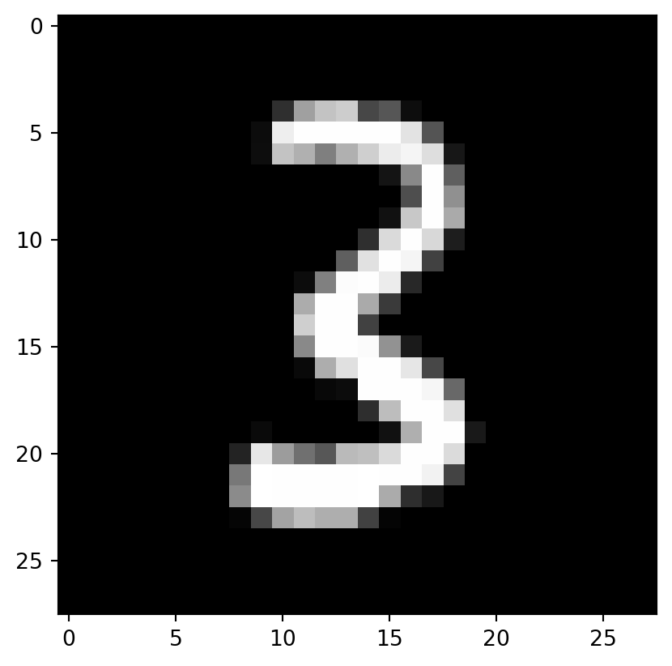

# Follow the previous post
import pickle,gzip,math,os,time,shutil,torch,matplotlib as mpl,numpy as np,matplotlib.pyplot as plt
from pathlib import Path
from torch import tensor,nn
import torch.nn.functional as F
from fastcore.test import test_close
# ---
torch.set_printoptions(precision=2, linewidth=140, sci_mode=False)
torch.manual_seed(1)
mpl.rcParams['image.cmap'] = 'gray'
%matplotlib inline
%config InlineBackend.figure_format = 'retina'
# ---
path_data = Path('data')
path_gz = path_data/'mnist.pkl.gz'
with gzip.open(path_gz, 'rb') as f: ((x_train, y_train), (x_valid, y_valid), _) = pickle.load(f, encoding='latin-1')
x_train, y_train, x_valid, y_valid = map(tensor, [x_train, y_train, x_valid, y_valid])
num_data, feature = x_train.shape
classes = y_train.max() + 1
num_hidden = 50
w1 = torch.randn(feature,num_hidden)
b1 = torch.zeros(num_hidden)
w2 = torch.randn(num_hidden,1)
b2 = torch.zeros(1)
def lin(x, w, b): return x@w + b
def relu(x): return x.clamp_min(0.)
def mse(output, targ): return (output[:,0]-targ).pow(2).mean()
def lin_grad(inp, out, w, b):
# grad of matmul with respect to input
inp.g = out.g @ w.t()
w.g = (inp.unsqueeze(-1) * out.g.unsqueeze(1)).sum(0)
b.g = out.g.sum(0)
def forward_and_backward(inp, targ):
# forward pass:
l1 = lin(inp, w1, b1)
l2 = relu(l1)
out = lin(l2, w2, b2)
diff = out[:,0]-targ
loss = diff.pow(2).mean()
# backward pass:
out.g = 2.*diff[:,None] / inp.shape[0]
lin_grad(l2, out, w2, b2)
l1.g = (l1>0).float() * l2.g
lin_grad(inp, l1, w1, b1)
forward_and_backward(x_train, y_train)
# Save for testing against later
def get_grad(x): return x.g.clone()
chks = w1,w2,b1,b2,x_train
grads = w1g,w2g,b1g,b2g,ig = tuple(map(get_grad, chks))In the first post, I finished backpropagation and the simple maths behind it. Now let’s talk about the design of PyTorch…
Actually I am not including it in my post. You can read about it here. To feel the need for PyTorch or Keras (and then TensorFlow 2.x), check out this script. Warning: the author defined four models as functions and updated them together in TensorFlow 1.x.
… which leads to our need to refactor the layers into objects, instead of functions. On defining them as class, we make them reusable and reduce the amount of codes to be written.
Setup
Refactor model
First attempt
class Relu():
def __call__(self, inp):
self.inp = inp
self.out = inp.clamp_min(0.)
return self.out
def backward(self): self.inp.g = (self.inp>0).float() * self.out.gclass Lin():
def __init__(self, w, b): self.w,self.b = w,b
def __call__(self, inp):
self.inp = inp
self.out = lin(inp, self.w, self.b)
return self.out
def backward(self):
self.inp.g = self.out.g @ self.w.t()
self.w.g = self.inp.t() @ self.out.g
self.b.g = self.out.g.sum(0)class Mse():
def __call__(self, inp, targ):
self.inp,self.targ = inp,targ
self.out = mse(inp, targ)
return self.out
def backward(self):
self.inp.g = 2. * (self.inp.squeeze() - self.targ).unsqueeze(-1) / self.targ.shape[0]class Model():
def __init__(self, w1, b1, w2, b2):
self.layers = [Lin(w1,b1), Relu(), Lin(w2,b2)]
self.loss = Mse()
def __call__(self, x, targ):
for l in self.layers: x = l(x)
return self.loss(x, targ)
def backward(self):
self.loss.backward()
for l in reversed(self.layers): l.backward()Here, I learnt about the dunder methods. They define the intrinsic appearance of a class. __init__() defines the parameters is expect you to pass into when you define a new instance of that class. __call__ defines what happens when you use an instance as a function. Here, __call__() is used to define the forward pass of the class. For the general Model() class, Jeremy suggested that the loss is returned. As this is an image classification problem, I think that a metric such as accuracy can be calculated and returned here as well.
def test_grad(inp, targ):
model = Model(w1, b1, w2, b2)
loss = model(inp, targ)
model.backward()
try:
test_close(w2g, w2.g, eps=0.01)
test_close(b2g, b2.g, eps=0.01)
test_close(w1g, w1.g, eps=0.01)
test_close(b1g, b1.g, eps=0.01)
test_close(ig, x_train.g, eps=0.01)
print("Test passed")
except AssertionError as e:
print(f"Test failed on line {e.__traceback__.tb_lineno}")
print(f"{e.args[0]} is different from {e.args[1]}. Please check the implementation associated with the particular weight again.")
raise Exceptiontest_grad(x_train, y_train)Test passedPerfect - no error! This is means that the gradient is calculated correctly.
However, in practice, if I am a programmer, I would rather you do not modify dunder methods if necessary. In PyTorch this is avoided by creating a base class (maybe called Module or nn.Module) having __call__() calling a forward() method instead. In subsequent inherited class, whether the official nn.Linear or a newly designed layer such as nn.MultiHeadAttention, the user only needs to modify the public method forward().
Module.forward()
class Module():
def __call__(self, *args):
self.args = args
self.out = self.forward(*args)
return self.out
def forward(self): raise Exception('not implemented')
def backward(self): self.bwd(self.out, *self.args)
def bwd(self): raise Exception('not implemented')class Relu(Module):
def forward(self, inp): return inp.clamp_min(0.)
def bwd(self, out, inp): inp.g = (inp>0).float() * out.gclass Lin(Module):
def __init__(self, w, b): self.w,self.b = w,b
def forward(self, inp): return inp@self.w + self.b
def bwd(self, out, inp):
inp.g = self.out.g @ self.w.t()
self.w.g = inp.t() @ self.out.g
self.b.g = self.out.g.sum(0)class Mse(Module):
def forward (self, inp, targ): return (inp.squeeze() - targ).pow(2).mean()
def bwd(self, out, inp, targ): inp.g = 2*(inp.squeeze()-targ).unsqueeze(-1) / targ.shape[0]test_grad(x_train, y_train)Test passedPyTorch-ic Model
class Model(nn.Module):
def __init__(self, n_in, n_hidden, n_out):
super().__init__()
self.layers = nn.Sequential(
nn.Linear(n_in, n_hidden),
nn.ReLU(),
nn.Linear(n_hidden, n_out))
def forward(self, x, target):
x = self.layers(x)
return F.mse_loss(x, target[:, None])model = Model(feature, num_hidden, 1)
loss = model(x_train, y_train.float())
loss.backward()l0 = model.layers[0]
l0.bias.gradtensor([-0.11, 0.72, 0.51, 0.25, -0.49, 0.30, -0.32, 0.32, -0.27, -0.80, -0.13, -0.54, 0.01, 0.05, -0.16, 0.64, -0.07, 0.96, -0.04,
-1.04, -0.63, -0.91, 0.74, 0.43, 0.14, 0.11, -0.07, -0.17, 0.20, -0.23, -0.68, -0.16, 0.16, -0.23, 0.01, 0.03, -0.04, 0.79,
0.74, -0.24, 0.13, 0.44, -0.01, 0.93, -0.36, 0.53, -0.22, 0.66, -0.21, 0.07])Cross-entropy loss
At the moment, the output is directly passed into the loss function as it is just a single output. However, this is a poor choice to optimize the parameters.
The simplest explanation is the current loss measures the relative distance between class. For example, if the true class is 5 and our model outputs 6, it is worse than 7 but only as good as 4. The model may still be able to learn correctly, but there is better option.
The output should be passed into a softmax function. The loss function should be cross-entropy loss instead of MSE loss. Let’s unpack these. First, softmax functions: \[\hbox{softmax(x)}_{i} = \frac{e^{x_{i}}}{e^{x_{0}} + e^{x_{1}} + \cdots + e^{x_{n-1}}}\] or more concisely: \[\hbox{softmax(x)}_{i} = \frac{e^{x_{i}}}{\sum\limits_{0 \leq j \lt n} e^{x_{j}}}\]
Second, cross-entropy loss: \[ -\sum x\, \log p(x) \] where \(x\) is the true class and \(p(x)\) is the predicted probability of the true class. For \(x\) one-hot encoded, the formula is reduced to \(-\log(p_{i})\) with \(i\) the index of the desired target.
The softmax function is used to convert the output into a probability. You can see that it is just a way to calculate the proportion of something in a whole, though more sophisticated than simply $ $. The reason for the exponential is to make sure that the output is positive plus amplify the difference between classes.
The cross entropy loss effectively measures the distance between the true probability distribution and the predicted probability distribution. The true probability distribution is one-hot encoded, while the predicted one has one value for each class at each example, altogether summed to 1. The loss is the negative log of the predicted probability of the true class. If the model predicts a low probability i.e. close to 0, the loss will be very large, towards infinity (but not beyond). If the model appropriately predicts a high probability i.e. close to 1, the loss will be very small, towards 0. Just, finding the parameters to minimize the loss will have the effect of maximizing the probability of the true class.
class Model(nn.Module):
def __init__(self, n_in, n_hidden, n_out):
super().__init__()
self.layers = nn.Sequential(
nn.Linear(n_in, n_hidden),
nn.ReLU(),
nn.Linear(n_hidden, n_out))
def forward(self, x):
return self.layers(x)model = Model(feature, num_hidden, 10)
pred = model(x_train)
pred.shapetorch.Size([50000, 10]) def log_softmax(x): return (x.exp()/(x.exp().sum(-1,keepdim=True))).log()log_softmax(pred)tensor([[-2.35, -2.23, -2.25, ..., -2.38, -2.44, -2.27],
[-2.31, -2.22, -2.27, ..., -2.36, -2.48, -2.39],
[-2.24, -2.27, -2.19, ..., -2.41, -2.42, -2.27],
...,
[-2.28, -2.27, -2.19, ..., -2.42, -2.42, -2.31],
[-2.29, -2.30, -2.27, ..., -2.29, -2.42, -2.33],
[-2.34, -2.25, -2.17, ..., -2.26, -2.33, -2.37]], grad_fn=<LogBackward0>)The log of softmax can be more reliably calculated with the LogSumExp trick
\[\log \left ( \sum_{j=1}^{n} e^{x_{j}} \right ) = \log \left ( e^{a} \sum_{j=1}^{n} e^{x_{j}-a} \right ) = a + \log \left ( \sum_{j=1}^{n} e^{x_{j}-a} \right )\] where a is the maximum of the \(x_{j}\). (This is already implemented in PyTorch.)
def logsumexp(x):
m = x.max(-1)[0]
return m + (x-m[:,None]).exp().sum(-1).log()
def log_softmax(x): return x - x.logsumexp(-1,keepdim=True)test_close(logsumexp(pred), pred.logsumexp(-1))sm_pred = log_softmax(pred)
sm_predtensor([[-2.35, -2.23, -2.25, ..., -2.38, -2.44, -2.27],
[-2.31, -2.22, -2.27, ..., -2.36, -2.48, -2.39],
[-2.24, -2.27, -2.19, ..., -2.41, -2.42, -2.27],
...,
[-2.28, -2.27, -2.19, ..., -2.42, -2.42, -2.31],
[-2.29, -2.30, -2.27, ..., -2.29, -2.42, -2.33],
[-2.34, -2.25, -2.17, ..., -2.26, -2.33, -2.37]], grad_fn=<SubBackward0>)From the simplified formula above, to calculate the loss, only the softmax activation at that index is required. The value can be accessed with integer array indexing, which is the same as in NumPy or PyTorch.
print("This is the first 3 true classes: \n", y_train[:3])
print("This is the first 3 log softmax predictions for all classes: \n", sm_pred[:3,:])
print("This is the WRONG first 3 log softmax predictions for just the first 3 true classes: \n", sm_pred[:3,y_train[:3]])
print("This is the CORRECT first 3 log softmax predictions for just the first 3 true classes: \n", sm_pred[[0, 1, 2],y_train[:3]])This is the first 3 true classes:
tensor([5, 0, 4])
This is the first 3 log softmax predictions for all classes:
tensor([[-2.35, -2.23, -2.25, -2.15, -2.33, -2.34, -2.33, -2.38, -2.44, -2.27],
[-2.31, -2.22, -2.27, -2.18, -2.31, -2.33, -2.22, -2.36, -2.48, -2.39],
[-2.24, -2.27, -2.19, -2.28, -2.29, -2.38, -2.32, -2.41, -2.42, -2.27]], grad_fn=<SliceBackward0>)
This is the WRONG first 3 log softmax predictions for just the first 3 true classes:
tensor([[-2.34, -2.35, -2.33],
[-2.33, -2.31, -2.31],
[-2.38, -2.24, -2.29]], grad_fn=<IndexBackward0>)
This is the CORRECT first 3 log softmax predictions for just the first 3 true classes:
tensor([-2.34, -2.31, -2.29], grad_fn=<IndexBackward0>)Note that integer array indexing requires an array (Python list, NumPy/PyTorch array) passed in. Using normal slicing will broadcast the result instead.
def nll(input, target): return -input[range(target.shape[0]), target].mean()
loss = nll(sm_pred, y_train)
loss
# Test against PyTorch implementation
test_close(F.nll_loss(F.log_softmax(pred, -1), y_train), loss, 1e-3)In PyTorch, the two steps F.log_softmax and F.nll_loss are combined into F.cross_entropy so the logits from the model is enough. (This has something to do with better precision, which matters more as dataset size grows.)
Training loop
The basic training loop is contained within a nursery rhyme
Basically, there are 4 steps in each batch:
- Get model’s predictions on a batch of inputs.
- Compute the loss of the current batch.
- Calculate the gradients of the loss with respect to every parameter of the model
- Update parameters with those gradients, one small step (or large, as in Super-Convergence large) at a time to improve predictions.
# Hyperparameters
batch_size = 50
lr = 0.5 # learning rate
epochs = 3
loss_func = F.cross_entropy
# Helper functions
def accuracy(out, yb): return (out.argmax(dim=1)==yb).float().mean()
def report(loss, preds, yb): print(f'{loss:.2f}, {accuracy(preds, yb):.2f}')for epoch in range(epochs):
for i in range(0, num_data, batch_size):
s = slice(i, min(num_data,i+batch_size))
xb,yb = x_train[s], y_train[s]
preds = model(xb)
loss = loss_func(preds, yb)
loss.backward()
with torch.no_grad():
for l in model.layers:
if hasattr(l, 'weight'):
l.weight -= l.weight.grad * lr
l.bias -= l.bias.grad * lr
l.weight.grad.zero_()
l.bias .grad.zero_()
report(loss, preds, yb)0.14, 0.96
0.15, 0.94
0.10, 0.94Training loop with parameters, optim, Dataset, and Dataloader
Parameters
Refactoring is about writing less code to do the same work - Jeremy Howard
Which essentially means designing with reusability in mind.
Because the training loop is central to deep learning, PyTorch designers have defined two important pieces: model.parameters() and optim submodule.
In a PyTorch module, the layers are stored inside named_children() attribute and the parameters are stored inside parameters(), which give you a generator object when you call it.
class MLP(nn.Module):
def __init__(self, n_in, n_hidden, n_out):
super().__init__()
self.l1 = nn.Linear(n_in,n_hidden)
self.l2 = nn.Linear(n_hidden,n_out)
self.relu = nn.ReLU()
def forward(self, x): return self.l2(self.relu(self.l1(x)))model = MLP(feature, num_hidden, 10)
modelMLP(
(l1): Linear(in_features=784, out_features=50, bias=True)
(l2): Linear(in_features=50, out_features=10, bias=True)
(relu): ReLU()
)print('Generator object: ', model.named_children())
for name, layer in model.named_children():
print(f"{name}: {layer}")Generator object: <generator object Module.named_children at 0x0000028D98B70E50>
l1: Linear(in_features=784, out_features=50, bias=True)
l2: Linear(in_features=50, out_features=10, bias=True)
relu: ReLU()So the information prints out when I called model is stored inside model.named_children(). As it is a Generator, I have to iterate through it to see the information.
# Similarly for parameters
print(model.parameters())
list(model.parameters())<generator object Module.parameters at 0x0000028D98811E00>[Parameter containing:
tensor([[-0.03, -0.03, -0.01, ..., -0.02, -0.02, -0.00],
[-0.02, -0.01, 0.00, ..., 0.03, -0.00, 0.03],
[ 0.01, -0.02, -0.00, ..., 0.00, -0.02, 0.01],
...,
[ 0.02, 0.03, 0.01, ..., 0.00, 0.01, -0.02],
[-0.03, 0.01, 0.02, ..., 0.02, 0.03, 0.01],
[ 0.00, -0.03, 0.01, ..., 0.01, 0.01, -0.01]], requires_grad=True),
Parameter containing:
tensor([-0.00, -0.01, 0.03, 0.02, 0.03, 0.02, 0.01, -0.03, -0.01, -0.01, 0.02, -0.02, -0.04, -0.01, 0.03, -0.02, 0.01, -0.03, -0.01,
0.01, 0.03, -0.03, -0.02, -0.01, 0.01, 0.01, 0.00, -0.01, 0.02, 0.01, 0.03, -0.02, -0.00, -0.03, 0.01, -0.00, 0.01, 0.01,
0.03, 0.02, 0.03, 0.03, 0.02, -0.04, 0.03, 0.01, 0.01, -0.01, -0.03, 0.03], requires_grad=True),
Parameter containing:
tensor([[ -0.10, -0.08, 0.13, -0.11, 0.05, -0.03, -0.11, -0.14, -0.11, 0.11, -0.09, 0.10,
-0.02, -0.10, -0.09, -0.10, -0.12, -0.13, -0.04, 0.10, 0.03, 0.09, -0.12, -0.07,
0.05, 0.06, 0.10, -0.04, -0.07, -0.11, -0.09, -0.09, -0.05, 0.12, 0.00, -0.02,
0.05, 0.13, -0.04, 0.02, -0.02, 0.06, -0.11, -0.04, 0.13, -0.06, -0.02, -0.03,
0.04, 0.06],
[ -0.10, -0.03, -0.04, 0.03, -0.03, 0.02, -0.03, -0.01, -0.03, -0.12, 0.02, 0.03,
-0.07, -0.04, 0.02, 0.11, -0.12, 0.13, 0.08, 0.11, 0.09, -0.11, 0.00, -0.12,
-0.07, -0.13, -0.10, 0.00, -0.10, 0.06, -0.13, -0.02, 0.05, -0.06, 0.11, -0.06,
0.09, 0.07, -0.08, 0.09, -0.00, 0.13, -0.02, 0.13, 0.08, -0.07, 0.10, 0.01,
0.13, 0.03],
[ -0.12, 0.03, -0.05, 0.05, 0.09, -0.03, 0.03, 0.01, -0.03, -0.01, -0.09, 0.07,
0.02, -0.02, -0.08, 0.03, -0.13, -0.02, 0.01, 0.02, 0.02, 0.04, 0.12, -0.01,
-0.04, -0.05, -0.09, 0.06, 0.11, 0.10, 0.10, 0.04, -0.03, 0.02, -0.07, 0.05,
0.06, -0.04, -0.01, 0.02, 0.07, -0.10, -0.01, 0.02, 0.08, 0.03, 0.01, 0.01,
0.11, -0.08],
[ -0.06, 0.06, -0.14, 0.04, 0.09, -0.08, -0.01, -0.01, 0.06, 0.14, 0.12, -0.08,
-0.06, 0.13, -0.11, -0.11, -0.04, 0.02, 0.08, 0.04, 0.10, 0.00, 0.01, -0.08,
-0.12, 0.10, -0.10, -0.01, 0.02, 0.04, 0.06, -0.13, -0.11, -0.05, 0.05, -0.10,
0.09, 0.09, -0.12, -0.08, -0.05, -0.07, -0.09, 0.12, 0.14, 0.08, 0.08, 0.12,
0.08, 0.09],
[ 0.03, -0.10, -0.09, 0.13, 0.02, -0.11, 0.05, 0.08, -0.06, 0.07, -0.09, 0.03,
0.00, -0.00, 0.06, -0.01, -0.11, 0.02, -0.14, 0.07, 0.12, 0.04, 0.03, 0.03,
-0.01, -0.08, -0.14, 0.13, 0.12, 0.10, 0.03, 0.09, -0.07, 0.07, -0.02, 0.08,
-0.10, 0.01, 0.11, 0.12, -0.02, 0.05, 0.09, -0.13, -0.02, -0.03, -0.10, 0.13,
0.05, -0.07],
[ -0.08, 0.02, 0.07, 0.14, 0.08, 0.04, -0.12, -0.14, 0.01, -0.08, -0.12, 0.14,
-0.05, -0.09, -0.06, 0.07, -0.01, 0.11, 0.13, 0.14, -0.06, 0.07, -0.07, 0.12,
-0.00, -0.07, 0.02, 0.11, -0.02, -0.04, 0.03, 0.09, -0.11, 0.06, 0.10, -0.06,
0.12, -0.03, -0.00, -0.13, -0.04, 0.11, -0.01, 0.08, 0.03, 0.02, 0.04, 0.05,
0.04, -0.09],
[ -0.09, 0.02, -0.09, 0.13, 0.05, 0.12, 0.09, 0.02, -0.07, -0.10, -0.01, 0.13,
-0.07, -0.07, 0.11, 0.05, 0.13, -0.06, -0.11, -0.04, 0.05, 0.13, 0.08, -0.11,
0.01, -0.07, -0.10, 0.10, -0.04, 0.02, 0.07, -0.10, -0.05, 0.09, -0.03, -0.12,
-0.11, 0.12, -0.05, 0.10, -0.06, -0.10, -0.01, -0.04, 0.07, 0.06, -0.12, -0.11,
0.13, 0.04],
[ -0.06, -0.09, -0.09, -0.04, 0.00, 0.10, -0.13, -0.13, -0.08, 0.08, 0.02, 0.05,
0.06, 0.07, 0.03, -0.14, 0.07, 0.00, -0.08, 0.07, -0.01, 0.11, -0.01, 0.12,
-0.11, -0.11, 0.03, -0.09, 0.10, -0.06, 0.04, -0.11, -0.14, -0.02, -0.06, -0.04,
0.09, -0.02, -0.11, 0.05, 0.09, -0.10, 0.12, -0.07, -0.05, -0.03, 0.10, -0.12,
0.06, 0.00],
[ -0.05, -0.14, -0.12, -0.00, -0.11, 0.03, 0.06, 0.07, 0.10, -0.02, 0.01, 0.09,
0.06, 0.02, 0.14, 0.03, -0.09, -0.02, -0.07, 0.13, 0.04, -0.00, -0.02, -0.12,
-0.11, -0.06, 0.00, 0.02, -0.11, -0.13, -0.10, -0.12, -0.09, 0.09, -0.09, 0.08,
-0.12, 0.07, 0.10, 0.13, -0.05, 0.01, -0.04, 0.00, 0.03, 0.12, -0.11, -0.07,
0.10, -0.00],
[ -0.11, -0.10, -0.00, -0.09, -0.08, -0.10, 0.09, 0.01, 0.01, 0.04, 0.10, -0.04,
-0.14, -0.04, 0.00, -0.07, -0.04, 0.12, -0.06, -0.10, -0.04, -0.12, 0.01, -0.06,
0.12, 0.00, 0.04, 0.03, -0.06, 0.07, 0.08, -0.07, 0.12, 0.13, 0.01, -0.03,
0.07, 0.10, -0.14, -0.12, 0.06, 0.09, -0.10, -0.05, -0.01, 0.11, -0.00, -0.08,
0.13, 0.03]], requires_grad=True),
Parameter containing:
tensor([-0.13, 0.11, -0.08, -0.09, -0.12, -0.02, 0.04, 0.01, 0.13, -0.00], requires_grad=True)]Now let’s define a function for training the model using the .parameters() method.
def fit():
for epoch in range(epochs):
for i in range(0, num_data, batch_size):
s = slice(i, min(num_data,i+batch_size))
xb,yb = x_train[s],y_train[s]
preds = model(xb)
loss = loss_func(preds, yb)
loss.backward()
with torch.no_grad():
for p in model.parameters(): p -= p.grad * lr
model.zero_grad()
report(loss, preds, yb)fit()0.10, 0.94
0.08, 0.98
0.11, 0.96Behind the scene, PyTorch overrides the __setattr__() method in nn.Module to properly register the parameters. The code is equivalent to
# Taken straight from Jeremy Howard
class MyModule:
def __init__(self, n_in, nh, n_out):
self._modules = {}
self.l1 = nn.Linear(n_in,nh)
self.l2 = nn.Linear(nh,n_out)
def __setattr__(self,k,v):
if not k.startswith("_"): self._modules[k] = v
super().__setattr__(k,v)
def __repr__(self): return f'{self._modules}'
def parameters(self):
for l in self._modules.values(): yield from l.parameters()The layers are registered as attributes of the new instance. A private (with leading underscore) dictionary is initialized and used to keep track of the public attributes of the instance. __setattr__() is called when a new instance is initialized. All public attributes are written into the dictionary, and super().__setattr__(k,v) is calling the __setattr__() of the parent object class to properly register the attributes in the new instance. To output the nice summary when the instance is called, __repr__() must be defined. Lastly, to mimic the effect of calling .parameters(), a .parameters() method is defined, but instead of return, it yield the parameters of the layers, one parameter at a time, one layer at a time.
Next, you might want to pass in a list of layers instead of specifying the hyperparameters. In PyTorch, there is nn.ModuleList, which is equivalent to calling nn.Module.add_module() method iteratively on a list. One step forward and there is nn.Sequential(), which I excuse myself using earlier. I will skip this here, but will dwell on an interesting piece: the use of functools.reduce().
In forward, if I use nn.Sequential(), I can just call self.layers(x). But under the hood, something similar to a loop
def forward(self, x):
for l in self.layers: x = l(x)
return xIn Python, this can be reduced (pun not intended) to
def forward(self, x):
return reduce(lambda val, layer: layer(val), self.layers, x)This was implemented in Python “by some Lisp hacker”. The idea is to iterative call a function (the lambda one) that takes in two arguments, one or both can be from an iterable (self.layers) and one from an optional initial value (x) and produce an intermediate value, which is then used to call the function together with the next value of the iterable, until there is only one answer left. That’s too hand-wavy even for me, so let’s consider this example demonstrating how to calculate the sum of an array
def sum(array):
return reduce(lambda a, b: a + b, array)Anywho, having dealt with the parameters, the update loop is still verbose. The whole circle of updating the parameters and then zeroing the grads is implemented within optim for reusability. Let’s implement that.
Optimizer
class Optimizer():
def __init__(self, params, lr=0.5):
self.params = list(params)
self.lr = lr
def step(self):
with torch.no_grad():
for p in self.params: p -= p.grad * self.lr
def zero_grad(self):
for p in self.params: p.grad.data.zero_()model = nn.Sequential(nn.Linear(feature, num_hidden), nn.ReLU(), nn.Linear(num_hidden,10))
opt = Optimizer(model.parameters())for epoch in range(epochs):
for i in range(0, num_data, batch_size):
s = slice(i, min(num_data,i+batch_size))
xb,yb = x_train[s],y_train[s]
preds = model(xb)
loss = loss_func(preds, yb)
loss.backward()
opt.step()
opt.zero_grad()
report(loss, preds, yb)0.11, 0.96
0.07, 0.96
0.09, 0.98Now torch.optim is unlocked!
from torch import optim
def get_model():
model = nn.Sequential(nn.Linear(feature, num_hidden), nn.ReLU(), nn.Linear(num_hidden,10))
return model, optim.SGD(model.parameters(), lr=lr)
model,opt = get_model()for epoch in range(epochs):
for i in range(0, num_data, batch_size):
s = slice(i, min(num_data,i+batch_size))
xb,yb = x_train[s],y_train[s]
preds = model(xb)
loss = loss_func(preds, yb)
loss.backward()
opt.step()
opt.zero_grad()
report(loss, preds, yb)0.11, 0.98
0.09, 0.98
0.06, 0.98Some may think that passing the generator
paramstoself.paramswould work. It doesn’t. The parameters need to be unpacked into a list storing inside the Optimizer. It is also the case in the implementation of PyTorch.
Dataset and Dataloader
For organization, it is better to have the data processing codes grouped in one place and decoupled from the training loop. Thus, PyTorch comes prepared with torch.utils.data.DataLoader and torch.utils.data.Dataset to achieve this goal.
The Dataset class should store the data with its label. A minimal implementation will be
class Dataset():
def __init__(self, x, y): self.x,self.y = x,y
def __len__(self): return len(self.x)
def __getitem__(self, i): return self.x[i], self.y[i]The dunder method __getitem__() needs implementing to support square bracket indexing.
def test_Dataset(x_train, y_train, x_valid, y_valid):
try:
train_ds, valid_ds = Dataset(x_train, y_train), Dataset(x_valid, y_valid)
assert len(train_ds)==len(x_train), "train_ds length does not match x_train length"
assert len(valid_ds)==len(x_valid), "valid_ds length does not match x_valid length"
xb,yb = train_ds[0:5]
assert xb.shape==(5,28*28), "xb shape is incorrect"
assert yb.shape==(5,), "yb shape is incorrect"
print('All tests passed')
except AssertionError as e:
print("AssertionError:", e)test_Dataset(x_train, y_train, x_valid, y_valid)All tests passedtrain_ds, valid_ds = Dataset(x_train, y_train), Dataset(x_valid, y_valid)
model, opt = get_model()
for epoch in range(epochs):
for i in range(0, num_data, batch_size):
xb,yb = train_ds[i:min(num_data, i+batch_size)]
preds = model(xb)
loss = loss_func(preds, yb)
loss.backward()
opt.step()
opt.zero_grad()
report(loss, preds, yb)0.12, 0.96
0.07, 0.98
0.05, 1.00DataLoader is designed as an iterator wrapper for Dataset. It can be minimally constructed as
class DataLoader():
def __init__(self, dataset, batch_size): self.dataset,self.batch_size = dataset,batch_size
def __iter__(self):
for i in range(0, len(self.dataset), self.batch_size): yield self.dataset[i:i+self.batch_size]To give the object iterator’s functionalities, the dunder method __iter__() needs implementing.
train_dl = DataLoader(train_ds, batch_size)
valid_dl = DataLoader(valid_ds, batch_size)xb,yb = next(iter(valid_dl))
print(xb.shape)
plt.imshow(xb[0].view(28,28))
print(yb[0])torch.Size([50, 784])
tensor(3)
model,opt = get_model()def fit():
for epoch in range(epochs):
for xb,yb in train_dl:
preds = model(xb)
loss = loss_func(preds, yb)
loss.backward()
opt.step()
opt.zero_grad()
report(loss, preds, yb)
fit()0.09, 0.96
0.05, 1.00
0.02, 1.00Random Sampler
It is usually the case that training data is randomized for each batch. For that, I need a Sampler, which can be constructed from Python random module.
import random
import fastcore.all as fc
class Sampler():
def __init__(self, dataset, shuffle=False): self.n,self.shuffle = len(dataset),shuffle
def __iter__(self):
res = list(range(self.n))
if self.shuffle: random.shuffle(res)
return iter(res)
class BatchSampler():
def __init__(self, sampler, batch_size, drop_last=False): fc.store_attr()
def __iter__(self): yield from fc.chunked(iter(self.sampler), self.batch_size, drop_last=self.drop_last)Let’s unpack the codes. In Sampler(), the logic of __iter__() means it will return the indices of the data, randomly shuffled if shuffle = True. In BatchSampler(), it takes the indices (can be from Sampler() or not) and then chunk them into an iterator that returns only 1 batch at a time. These randomized, batchified indices are then passed into the DataLoader to pull the data one batch at a time.
def collate(b):
xs,ys = zip(*b)
return torch.stack(xs),torch.stack(ys)
class DataLoader():
def __init__(self, dataset, batchs, collate_fn=collate): fc.store_attr()
def __iter__(self): yield from (self.collate_fn(self.dataset[i] for i in b) for b in self.batchs)train_samp = BatchSampler(Sampler(train_ds, shuffle=True ), batch_size)
valid_samp = BatchSampler(Sampler(valid_ds, shuffle=False), batch_size)
train_dl = DataLoader(train_ds, batchs=train_samp)
valid_dl = DataLoader(valid_ds, batchs=valid_samp)
xb,yb = next(iter(valid_dl))
plt.imshow(xb[0].view(28,28))
yb[0]tensor(3)model,opt = get_model()
fit()0.25, 0.90
0.33, 0.92
0.08, 0.94In PyTorch, these are all built-in - one just need to specify shuffle option inside DataLoader.
Final loop
from torch.utils.data import DataLoader
def get_dls(train_ds, valid_ds, batch_size, **kwargs):
return (DataLoader(train_ds, batch_size=batch_size, shuffle=True, **kwargs),
DataLoader(valid_ds, batch_size=batch_size*2, **kwargs))
def fit(epochs, model, loss_func, opt, train_dl, valid_dl):
for epoch in range(epochs):
model.train()
for xb,yb in train_dl:
loss = loss_func(model(xb), yb)
loss.backward()
opt.step()
opt.zero_grad()
model.eval()
with torch.no_grad():
tot_loss,tot_acc,count = 0.,0.,0
for xb,yb in valid_dl:
pred = model(xb)
n = len(xb)
count += n
tot_loss += loss_func(pred,yb).item()*n
tot_acc += accuracy (pred,yb).item()*n
print(epoch, tot_loss/count, tot_acc/count)
return tot_loss/count, tot_acc/counttrain_dl,valid_dl = get_dls(train_ds, valid_ds, batch_size)
model,opt = get_model()
%time loss,acc = fit(5, model, loss_func, opt, train_dl, valid_dl)0 0.14974518071860074 0.9573000037670135
1 0.1304094205936417 0.9616000056266785
2 0.15038241338916122 0.9566000056266785
3 0.10842797339893878 0.9713000059127808
4 0.1303363377088681 0.9622000086307526
CPU times: total: 14.5 s
Wall time: 4.68 sConclusion
That concludes everything. Next time, let’s talk about using nbdev to export the most useful codes from notebooks into a module or a Python script.